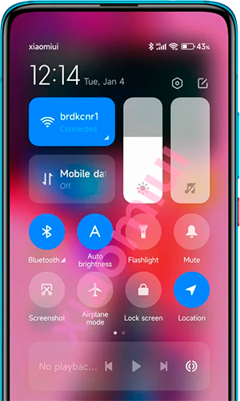

MIUI (от Mi User Interface) — оболочка ОС Android, разработанная компанией Xiaomi для своих
смартфонов и планшетов.

Разработка
Первые версии были разработаны на основе Android 2.2 Froyo и поддерживали только китайский
язык. В отличии от ОС Android, MIUI имеет переработанный пользовательский интерфейс и ряд
собственных приложений. Оболочка набирала обороты. Независимые группы разработчиков переводили её
на многие языки.
После выхода компании Xiaomi на международный рынок, MIUI была разделена на локальную и международную
версии. В локальной версии отсутствуют сервисы Google и поддерживаются только 2 языка: китайсуий и
английский. В международной версии предустановлены сервисы Google и имеется поддержка 40 языков.
Версии
Версии MIUI делятся на 2 ветви: стабильная и для разработчиков. Стабильные версии выпускаются ~ раз в
2-3 месяца, для разработчиков — раз в неделю.
В 2018 году появилась русская прошивка.
MIUI имеет открытый исходный код.
Версии:
- MIUI V1 — 16 августа 2010, на основе Android 2.2
- MIUI V2 — 29 октября 2010, на основе Android 2.2
- MIUI V3 — 25 марта 2011, на основе Android 2.3
- MIUI V4 — 19 января 2012, на основе Android 4.0-4.1
- MIUI V5 — 9 апреля 2013, на основе Android 4.1-4.4
- MIUI 6 — 16 августа 2014, на основе Android 4.4-5.0
- MIUI 7 — 13 августа 2015, на основе Android 4.4-6.0
- MIUI 8 — 10 мая 2016, на основе Android 4.4-7.1
- MIUI 9 — 26 июля 2017, на основе Android 4.4-8.1
- MIUI 10 — 31 мая 2018, на основе Android 6.0-9
- MIUI 11 — 24 сентября 2019, на основе Android 7.0-10
- MIUI 12 — 27 апреля 2020, на основе Android 9-11
- MIUI 12.5 — 28 декабря 2020, на основе Android 10-11
- MIUI 13 — 2021, на основе Android 11-12
Недостатки
- в официальных приложениях разработчика рисутствует реклама
- оболочка имеет большое количество предустановленных приложений
- в ранних версиях, оболочка потребляла много оперативной и
постоянной памяти, что приводило к снижению производительности
- MIUI зачастую выходит намного позже официального анонса